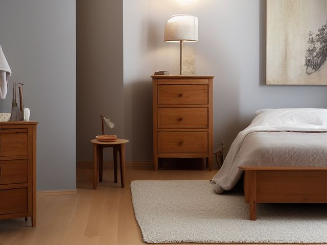

Guest Bedroom micro zone
The Guest Dresser
Somewhere a guest can unpack, so they stop living out of a half open suitcase on the floor.
One session: 30-45 min. most of it in Sort, because emptying two drawers means deciding where their contents actually belong

What done looks like
The top two drawers completely empty and lined, the lower drawers holding spare linens folded to one uniform footprint with a label on the inside front edge, an anti-tip strap fixed to the wall, and the dresser top carrying a lamp or a mirror and nothing else.
Check these before you start
- Fall, cut, or crushAn unstrapped dresser with heavy linens low and empty drawers high, in a room where a visiting child is often left to play while the adults talk downstairs.
- Poison, choke, or strangleDry cleaning film or the plastic bags spare bedding came sealed in, left inside a low drawer a small guest can open on their own.
What to have on hand before you start
These are types of thing, not brands. If you already own something that does the job, that is the right one to use. Each says which pass needs it and what to watch out for.
- Color-coded microfiber cloth set ×12
Wipe, dust, and dry surfaces, in the Shine pass.
Wash by use color; avoid fabric softener. - Neutral pH multi-surface cleaner
Routine cleaning of sealed surfaces, in the Shine and Sustain passes.
Verify surface compatibility; lock around children and pets. - Compact vacuum with attachments
Remove dust, crumbs, and debris, in the Shine pass.
Use appropriate attachment. - Keep, Relocate, Donate, Recycle, Trash container set ×5
Support rapid item routing during Sort, in the Sort pass.
Do not block exits. - Portable cleaning caddy
Transport and contain cleaning inputs, in the Straighten, Shine and Sustain passes.
Secure chemicals from children and pets. - Portable label maker
Create durable standardized labels, in the Standardize and Sustain passes.
Follow surface and adhesive guidance. - Removable write-on labels
Create temporary or adjustable visual controls, in the Standardize pass.
Test on delicate finishes.
Only if your guest dresser has one: 8 more
Not every guest dresser needs these. Each one is here because some do, and the reason is next to it.
- Matching Hanger Set ×30
Standardize hanging storage and reduce visual noise, in the Straighten, Standardize and Sustain passes.
Do not overload; anchor wall-mounted or tall systems where required. - Woven Basket Small ×2
Contain soft or decorative daily-use items, in the Straighten, Standardize and Sustain passes.
Do not overload; anchor wall-mounted or tall systems where required. - Over-Door Hook Rack
Add reversible vertical storage, in the Straighten, Standardize and Sustain passes.
Do not overload; anchor wall-mounted or tall systems where required. - Drawer Divider Set
Create visible subcategories in shallow drawers, in the Straighten, Standardize and Sustain passes.
Do not overload; anchor wall-mounted or tall systems where required. - Shoe Rack
Contain active footwear and preserve floor paths, in the Straighten, Standardize and Sustain passes.
Do not overload; anchor wall-mounted or tall systems where required. - Towel Shelf Basket ×3
Contain towels and linen sets, in the Straighten, Standardize and Sustain passes.
Do not overload; anchor wall-mounted or tall systems where required. - Anti-tip anchors and hardware
Secure tall furniture and shelving, in the Safety pass.
Install to manufacturer and wall-type requirements. - Shelf Location Label Set
Standardize location naming, in the Standardize and Sustain passes.
Install and use according to product instructions.
The six passes, in order
Work them in this order. Sorting after you have arranged things means arranging things you were about to remove.
Sort
Decide what stays. Everything else leaves the zone now.
This is where the household's undecided things hide behind a closed front: off-season jumpers, a bin of cables, wrapping paper and ribbon, a bag of outgrown baby clothes waiting on a decision about a second child. The jumpers go to your own wardrobe, the cables to the drawer that already holds cables, and the baby clothes get the decision today rather than another year of storage.
Straighten
Give what stays a home, placed where the hand actually reaches.
Put the empty drawers at the top, where a guest opens first and bends least, and the spare linens underneath, since you fetch those twice a year and they fetch socks twice a day.
Shine
Clean it, and use the cleaning to inspect what you cannot see when it is full.
Vacuum inside each drawer and wipe the runners, then leave the empty drawers open with the window cracked while you finish the rest of the room. Old wood holds a smell, and a guest's clothes take it on in one night.
Surface by surface, all 5 of them, with what to use on each.
Safety
Make the zone safe for everybody who uses it, including the shortest person.
A dresser with two empty top drawers is lighter at the top than it looks, and a visiting child will climb it. Strap it into a stud, and pull each drawer fully out to check that it stops rather than sliding free onto a foot.
Standardize
Write down the best way you know today, so it survives you forgetting.
Write on a label inside each empty drawer's front edge: reserved, guest. It stops the household reading a visibly empty drawer as an invitation.
Sustain
Attach the reset to something that already happens, so it keeps itself.
During your own seasonal wardrobe change, you open these two drawers in the same trip and confirm they are still empty before the swap counts as done.
The overflow you told yourself was free
You have been storing things in here on the reasoning that the room stands empty most of the year, so the space costs nothing. It costs the whole point of the room. The rule: these two drawers belong to the guest and are never available, not for a week, not for the box you are about to sort properly, not for the winter coats until spring. When something in the house needs a home and this dresser is the only candidate, that is not a reason to take the drawer, it is a signal that you have not yet decided about the thing. Make the decision instead. This is the drawer that turns a storage room with a bed in it back into a guest room.
Cleaning it properly, surface by surface
Old wood holds a smell, and a guest's clothes take it on in a single night. The point of cleaning here is to air the empty drawers as much as to wipe them, so open everything and let the room breathe through it.
Work down, not across. Whatever comes off a high surface lands on the one below it, so cleaning the floor first means cleaning it twice.
Carry these in with you. Compact vacuum with attachments; Color-coded microfiber cloth set; Neutral pH multi-surface cleaner; Portable cleaning caddy; Streak-free glass and mirror cleaner.
- The dresser top and the lamp or mirror on it
Dust the top first, then lift the lamp or mirror rather than wiping around it and clean the ring of dust it was hiding. Wipe the top with the neutral pH cleaner. If a mirror stands here, finish it with a streak-free glass cleaner so it does not haze in the low light of a bedside lamp. - The back edge and the wall side
Reach the top back edge and the two sides against the wall, the faces that never get touched. A dry cloth lifts the settled dust, then a damp pass with the neutral pH cleaner where marks have set. - The drawer fronts and handles
Wipe each drawer front, and work a corner of the cloth or a detail brush around the handles and their fixing screws where hand grease and dust collect. - The drawer interiors and liners
Vacuum inside each drawer down to the base. Lift the liner, wipe under it, and set it back flat. Then leave the two empty top drawers pulled open with the window cracked while you finish the rest of the room, so the shut-away smell has somewhere to go. - The runners, the carcass, and the floor beneath
Wipe both runners of every drawer so they run true, dust the sides of the carcass and the kick base, and vacuum the floor tucked underneath the front feet.
Inspect as you clean. Cleaning is the only time you see the zone empty, so use it.
- Flag a musty note in the empty drawers or in the stored linens, which tells you the wood or the bedding is holding damp.
- Flag small round holes or a fine powder in old wood, the trail woodworm leaves behind.
- Flag a drawer that no longer runs square, a cracked runner, or veneer lifting at a front corner.
- As you clear the top, flag any water stain or heat mark left by a past plant, glass, or lamp.
- While you work behind it, flag an anti-tip strap that has gone slack or whose screw has started to pull from the wall.
The standard that keeps it fixed
Top two drawers empty and labelled reserved, lower drawers holding only spare linens for this room's bed, strap fixed to the wall.
Reset trigger. When you swap your own wardrobe over between seasons, you check the guest drawers are still empty before the swap counts as finished.
The rest of the guest bedroom, in working order
Each of these is one session on its own. Finish this zone before you open the next.
- The Guest Bed and Linens
- The Guest Nightstand
- The Guest Dresser, you are here
- The Guest Closet
- The Guest Welcome and Work Surface
The Guest Bedroom in full, with what each of the 5 zones is for
Related reading
- What is 6S?
- This zone's safety pass, in full
- Is one spot in this zone always the one you skip?
- Why this zone gets messy again
- Decluttering vs. organizing
- Before you buy storage for this zone
- Still does not fit, even after the honest count?
- Does something in this zone actually get used somewhere else?
- Stuck on one item in this zone?
- Written the standard, but nobody else follows it?
- Does everyone in the house agree what "done" looks like here?
- Does more than one person use this zone?
- Found a duplicate of something in this zone?
- Why the standard above names one home per category
- Is the everyday item in this zone actually the easy one to reach?
- Not sure whether to keep something in this zone?
- Does this zone keep running out of something?
- Started this zone and stalled partway through?
- Have you stopped noticing the clutter in this zone?
When you want it off the screen
Carry The Guest Dresser into the room
The method above is complete and free. The Whole House Print Pack puts The Guest Dresser and the other 113 micro zones on 684 printable cards, so the steps you just read are not stuck behind a phone screen while your hands are full.
The Print Pack, 19 dollarsJust this zone, 4 dollarsOr draw a card free
The Guest Dresser on its own is 4 dollars for 6 cards. All 114 micro zones is 19 dollars for 684. The whole house is the better buy; the single zone is here so you can take only what you are working on.
If The Guest Dresser keeps fighting back, the real problem usually sits somewhere else in the room. A one hour virtual consult is 250 dollars: we find the function, the friction and the root cause together, and you keep a written standard for the space. See what a consult covers.